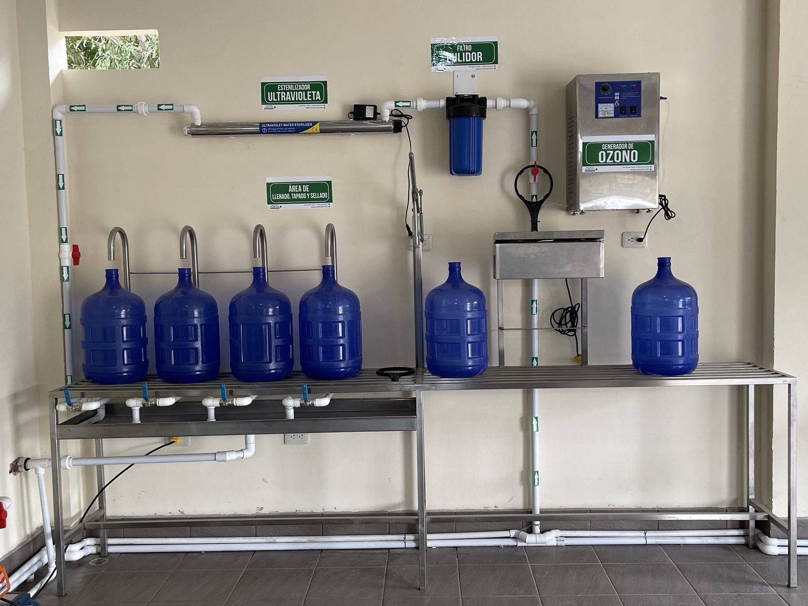

Categoría
UV y ozono para reforzar la seguridad microbiológica.
Sistemas de desinfección para aplicaciones donde el control microbiológico y la calidad final del agua son parte esencial del tratamiento.

- Desinfección efectiva Tecnologías para reforzar seguridad microbiológica en distintas aplicaciones.
- Calidad final Complementan etapas previas del tratamiento para elevar confiabilidad.
- Selección técnica Te ayudamos a definir la opción correcta según caudal y nivel de control.
Aplicaciones frecuentes
-
01
Desinfección
Control microbiológico para elevar seguridad en el agua tratada.
-
02
Seguridad microbiológica
Aplicaciones donde el control de microorganismos es prioritario.
-
03
Aplicaciones diversas
Uso en entornos comerciales, industriales y puntos críticos del tratamiento.
-
Uso recomendado
Etapas de desinfección donde se busca mayor seguridad microbiológica y confianza final.
-
Criterio técnico
La elección depende del tipo de aplicación, caudal, nivel de desinfección y configuración del sistema.
Catálogo
Otras categorías


Asesoría ideal